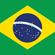
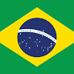
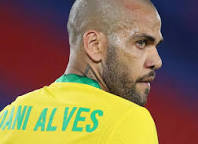

খেলাধুলার খবর

 
 
ফুটবলের ভদ্র ও বিনয়ী ডিফেন্ডারকে আর
কখনোই দেখতে পাবো না হলুদ জার্সিতে
ফুটবলের ভদ্র ও বিনয়ী ডিফেন্ডার!!
তোমার মুখটা দেখেই
আমার চোখে জল ছিলো।।
হয়তো, আমার পরবর্তী প্রজন্ম
কে তোমার খেলা দেখাতে পারবো না। কিন্তু তোমায় চেনা
বো। সিভলা তার ক্যারিয়ারে কখনোই লাল কার্ড দেখেন নি।
কোয়াটার ফাইনালে ক্রোয়েশিয়ার কাছে হারার পরে তিনি
জানিয়েছেন ২০২৪ কোপা আমেরিকা খেলে অবসরে যাবেন
তিনি।
এখনই অবসরের বিষয়ে কিছু বলছেন না
ব্রাজিলের কিংবদন্তি নেইমার জুনিয়র।
হয়তো আর বিশ্বকাপে নেইমার দেখতে পাবো না।
সে যে বড় ম্যাচের প্লেয়ার
আজকে তার প্রমাণ দিয়েছে নেইমার… নেইমার একটা প্রজম্ম তোমাকে মনে
রাখবে আজীবন।
তবে রিচার্লিসন,রাফিনহা,ভিনিসিয়াস,রড্রিগো কিংবা পেড্রো
ওদের এখনো ম্যাচিউরিটি আসেনি পুরোপুরি! বড় ম্যাচে নার্ভ ধরে রাখাটাও খেল
ার অনেক বড় একটা অংশ। তবে ব্রাজিলের সবচেয়ে বড় ভুল এগিয়ে যাওয়ার
পরেও আক্রমে যাওয়া।
তবে ক্রোয়োশিয়ার গোলকিপার লেভাকোভিচ যা করলো
আজ তা অবশ্যই অতিদানবীয়! তার করা অসাধারণ সেইভগুলোর কাছেই ছিটকে
গেলো ব্রাজিল…!কোয়ার্টার ফাইনালে ক্রোয়েশিয়ার কাছে ট্রাইবেকারে ৪-২ গোলে
হরে ভেঙ্গে পড়েন নেইমার। তবে ফুটবল সম্রাট পেলে নেইমারকে আরেকটা বিশ্বকা
প খেলার অনুরোধ করেছেন। ক্রোয়েশিয়ার সাথে নেইমারের করা ৭৭ তম গোলটি পে
লের করা রের্কড ৭৭ গোলের সমান হয়েছে। যা আজ পর্যন্ত কোনো প্লেয়ার করতে পারে
নাই।
পরবর্তী বিশ্বকাপে আবারও দেখা হবে।

ডানি আলভেজকে আর কখনোই হলুদ
জার্সিতে দেখতে পাবে না ফুটবল ভক্তরা।
চেষ্টার কোনো কমতি ছিলো না হয়তো ২০২৬ বিশ্বকাপে তোমাকে
দেখতে পাবো না। কিন্তু ফুটবল ও ফুটবল ভক্তরা তোমাকে খুব মিস
করবে ডানি আলভেজ। ডানি আলভেজ ৩৯ বছর বয়সি একজন ডি
ফেন্ডার।এই বয়সেও তিনি যুবকের মতো খেলছেন।আর কখনো তো
মায় দেখতে পাবো না হলুদ জার্সিতে ভালো থাকবেন।
« Previous
Next »
‹
›